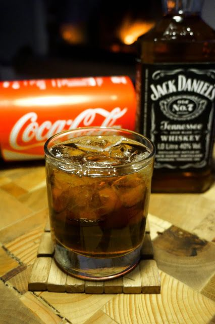

Classic Barrel-Aged Cocktail

Description
This traditional spirit-infused beverage will take you back to the good old days. Sit back in your rocking chair, put your fiddle down and watch the sunset as you sip on this southern classic.
Ingredients
- Ice
- 1 Can of Coca-cola. NOT Pepsi.
- Jack Daniel's Tennssee Whiskey
Instructions
- Fill your rocks glass with rocks
- Add a shot or two of Jack Daniel's to your cup
- Fill the rest with a cold Coke
- Give her a good stir, and enjoy!
Back to Home